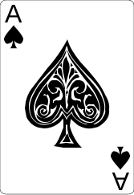
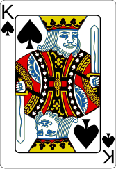
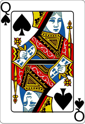
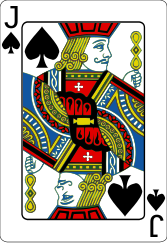
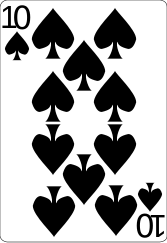

#1
/10
Royal flush
odds
1 in 649,740
4 possible combinations





The highest straight flush: the 10, jack, queen, king and ace all of the same suit — the single strongest hand in poker.
what it beats
Straight flushFour of a kindFull houseFlushStraightThree of a kindTwo pairOne pairHigh card
whyA royal flush is simply the highest possible straight flush (10-J-Q-K-A, one suit), and a straight flush already beats every other pattern in the game. All four royal flushes are equal, so this hand always at least ties, and it can never lose.
Beginner tip
This is the best possible hand — nothing beats it, so if you ever make one, you cannot lose the pot.
How it happened
Your two hole cards were A♠ and K♠, and the board ran out Q♠ J♠ 10♠ 2♦ 3♣. Your two spades plus the three spades on the board made A-K-Q-J-10, all in spades.